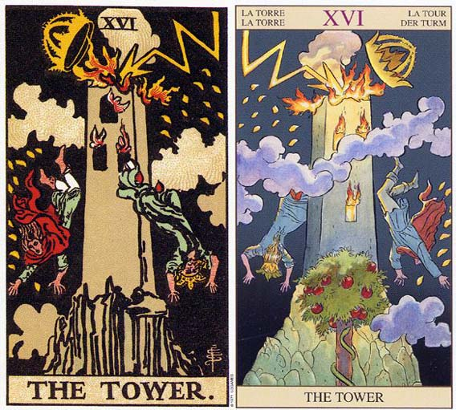

塔罗牌高塔解释，有一种痛会刻进灵魂里，在每一个细胞蔓延，但是你还是要接受这个过程，才能走出这个过程，爱与痛总是同时存在。世间的恩怨情仇在生命灰飞烟灭的时候，也会云淡风轻。只是，轮回的故事并没有结束，唯有在最深的爱与最深的慈悲里，才能真正把所有划上句号。高塔是与其余27张大阿尔卡相反，正面才代表不好。
塔罗牌高塔档案
牌 名：高塔 The Tower
别 名：上帝之家 The House Of God
星 相：火星
对应人物：Poseidon
含义：强行的变化、一个循环的终结。
关 键 字：骤变、灾难、破坏、意外、毁灭
加强牌：死神、太阳、星币五
四 要 素：火
每月16日-高塔。塔罗牌大阿卡那的第16张是“高塔”，画面上国王人雷击的高塔上摔下来，而建塔者则被一拳打中头部死去高塔不只象征现实事物的暂时性，也代表了人际关系和职业的变动性；而这些改变又往往是突然且迅速的。这张牌正立时显示能接受挫折，勇敢克服持久战。倒立时则代表得意忘形、自作自受以及沉迷在虚幻不实的想象中。
优点：紧迫的状态、状况紧急、趋于稳定、背水一战。
缺点：破产、逆境、被开除、急病、致命的打击、巨大的变动、受牵连、信念崩溃、玩火自焚、纷扰不断、突然分离，破灭的爱。
相关传说：十二主神之一，海神，罗马名Neptune（海王星）。
Crete王Minos（做迷宫的那位仁兄）要讨好海神Poseidon， 要把从海上浮起来的东西当祭品，于是海上浮起来一支白色美丽的公牛。 但Minos不愿意奉献，所以Poseidon让牛发疯。 那只牛和Minos的妻子Pasiphae生出Minotaur。
Minos于是要求Daedalus造个迷宫，把他的俘虏关在迷宫餵给Minotaur吃。 Minos的女儿Ariadne和Poseidon的儿子Theseus合力把Minotaur杀死。 Poseidon弄出地震把迷宫震碎，救出俘虏。 Theseus最后成为新Crete王。
塔罗牌高塔牌面故事
一座位于山巅上的高塔，被雷击中而毁坏，塔中两人头下脚上的坠落，塔顶有个主冠受雷击而即将坠落。塔象征物质，王冠象征统治和成就，也代表物质与财富，受雷一击，便荡然无存。天上的落雷是直接来自上帝的语言，两旁的火花有22个。象征塔罗22张大牌。灰色的云降下灾难之雨，不分性别阶级，平等的落向每一个人。背景全黑，这是一段黑暗的时期。
塔罗牌高塔牌面解释
解读一
闪电代表神的仲裁。三个窗户代表心智，肉体和情欲。 金黄色的火焰代表神的力量，左边的12个火焰代表肉体和心灵完美， 右边10个火焰代表旧循环结束，新循环开始。 高塔代表心中的心智模式，黑色的背景代表黑暗。 灰色的云代表智慧，两个下坠的人代表心中不正确的价值观和信念。
解读二
这张牌的图案和所罗门神殿被毁有关，闪电代表火和剑。 建筑物毁在Chaldees王之手。
解读三
狂傲的巴比伦人为了自傲，意图建高塔以达到神的国度， 上帝为了惩罚他们的狂傲，使每个人说不同的语言，最后并落雷把塔击毁。 雷声隆隆，塔脆弱地倒塌，楼阁燃烧起来，代表神的制裁。 这张牌不管正位逆位都不是好事。
这张牌是惟一一张没有好的意味的大阿卡纳，牌面描绘的是一座高耸入云的塔被闪电击毁了，两个人从坍塌中的高塔上跌落到地面上。突然而又不可预料的强烈变化让人无法接受，再高傲的人类也无法与自然的强大相提并论，挑战自然只会引来神的怒火。
尽管这巨大的变化无法让你适应，但这却是在教导你成长，尝试着接受它，它会让你在接下来的时间里走得更轻松。接受对手强大的事实确实有些困难，但务实的面对它，用理性的方式解决它也是个巨大的进步。
生日塔罗牌阵中若有这张牌，这号主人肯定不断地自我否定，而难以跟任何人相处，必须走向孤绝之路，置之死地而后生，一而再再而三地，将自己推向不断摧毁又重建的高峰。是否能够成功地逆向思考，端赖自我掌控的定力与纪律，谁都帮不上忙。
高塔与Mars火星绝对是双生兄弟，无穷的熊熊烈火，象征着革命的爆炸性与破坏力，戏剧而毁灭性的改变，让人招架不住地彻底毁灭一切。这种感觉，正像是避无可避，如闪电般意外出现的命定恋人，天翻地覆地摧毁所有既定的生存法则，而重新检视原有的生活价值观。此时此刻，这突如其来的变化，很可能便是此生最好的导师，给予瞬间痛苦的刺激，却因此获得无价的顿悟。
闪电与暴风雨弥漫在高塔的天空，行动力十足的爆破力，赤裸裸的能量与性欲，就这样累积到不得不瞬间爆破的高点，在高塔的顶端展示着启动与干扰作用力。经历过性爱高潮的人，都能深刻体会这种滋味，毁灭性的感觉，淋漓尽致，笔墨难以形容，也很难重复这种难能可贵的经验。回回不同的快感，容易令人耽溺，产生爱恋上瘾症。许多拿到这张牌的人，内心有着全然理解的痛，是有苦难言无法分享的疼，却，吊诡地，非常享受这种痛苦。
对人生中的一切常态产生质疑，渴求改变，越来越无法逆转地坚决，亢奋地干扰着每一寸神经。然而改变是有威胁性的，不安与不确定的因子，随时挑战着失控的内在能量，如何恰当地引用，是此刻最大的考验。
外在的变动，不断地刺激内在隐埋的源头，而让人失去精准的判断能力。拿到高塔牌的人，其实处于紧绷的状态，被危险与挑衅的刺激引诱着，直到瞬间爆破。反面的高塔，则谕示着事件已过，而早该是收拾残局的状态。这是塔罗牌中，唯一有正面意义的反向牌，朝向复元并走向解脱的修复期。
然而，对非常人来说，正面的高塔牌，可能是唯一走向巅峰的契机。
无论如何，最惨就是这样啦！干脆重头来过，反而轻松自如。通常，人只有经验了最大的痛苦，才能激发饱满的勇气往前走，而有意想不到的宝藏，居然就在前方等待汲取。
塔罗牌高塔牌义解释
塔的首要意义是剧变，通常是外在突如其来的改变，经常是当事人无法控制的，而且冲击可能深入内心，影响当事人的整个价值观与信仰，而失去安全感。天灾人祸、失业、意外、变故-在宏观的角度来看，这些改变都是有意义的，但是极少人能乐于接受这些灾难式的变化。此时请细听上帝的讯息，事件背后的深层意义将会浮现。
没有非常的破坏，就没有非常的建设。破坏的过程很痛苦，但为了光明的前景，短暂的痛苦也值得。好比政府如果开始大力整顿交通，人民得先度过一段交通黑暗期，才能享受交通顺畅的快感。
幻灭是成长的开始，塔则提供成长之前的幻灭。
塔的课题不容易，毕竟人受限于习惯，一旦日常生活模式受到预料之外的破坏，一定非常难以接受。但是塔也带来天启，这可能是极为难得的机缘。
从内在的层面来看，被波塞冬摧毁的高塔象征着老旧形式的坍塌。二十二张大阿卡纳牌中，高塔是唯一一个人造的建筑，所以非常具有代表性，我们就像米诺斯一样，为了保全颜面或者保持舒适等各种理由而抗拒生命中的某些事物，通过在内在或外在（生活中）修建秘密处所来隐藏它们。例如为了获得社会的接纳，我们会把自己的动物性隐藏于自己在内心修建的高塔之中。然后我们用自己的职业、获得的各种社会认可的证明、扮演良好的社会角色、与专业机构或团体建立的关系、礼貌的微笑、老练的社交手腕、杂志上推崇的着装和原生家庭灌输的道德，来隐藏自己觉得羞耻的秘密，也就是恶魔牌中等待愚人去揭示的、潘（Pan）神山洞中的秘密。高塔代表着错误的或者是不平衡的价值观，这种对生命的态度不适合完整的本我（self），它更像是演员在舞台表演中为了加强观众的印象而穿着的夸张装扮。同样地，高塔也代表着我们在外在世界修建的某种结构，用来呈现本我还没有完整的部分。
当愚人在迷宫中遇到伟大的潘神时，只要他不逃避，就一定会有所改变，变得更加谦卑、真实和完整。这种改变也不可避免地会反映到他的外在生活中，就像我们了解了潜意识的某些模式后，会改变我们生活中的选择模式一样。很多人都对于这种内在的探索过程非常恐惧，其中一个很重要的原因是，他们或多或少地知道一旦发现了自己的真实本性，就不能在生活中伪装自己了。当人们用真诚的态度面对恶魔的时候，就会引发内心深处更趋向于完整的转化，那么代表老旧模式的高塔就会坍塌。愚人一旦察觉到自己违背了真实的自然本性，其震撼程度就像波塞冬的三叉戟摧毁了迷宫一样，相关的防御体系分崩离析，往日被奴役的那部分自我又重获自由。从某种程度来说，米诺陶就是恶魔的另一个化身，因为他们都反映着与身体和令人羞耻的性冲动有关的（动物性的）隐私，甚至人们自己都没有真正看到过他们，因为我们太忙于在社会中表达自己的“清白”和“友善”。
从占卜的角度来看，高塔牌出现的时候，预示着当事人身上某种老旧的存在模式正在瓦解。和死神牌以及恶魔牌一样，判断这张牌的“好”与“坏”取决于当事人的态度以及对相应事件的感受。当然，最好的方式就是当事人主动去探寻哪种错误（或扭曲）的人格面具或自我认知束缚（或压抑）了自己，打破老旧错误模式的主动意愿会带来事半功倍的效果。但是无论我们愿意与否，高塔的坍塌是必然的，那不是因为某种外在宿命式的事件，而是因为个体内在的动力已经到了沸点，陈旧冰冷的局限必然消融。
塔罗牌高塔解牌参考
正位解读
1．垮台，失去了所有保障。
2．遭遇惨重的失败，致命的打击，无法预料到的坏事发生了。
3．身体不好，得重病，治疗需要很久。
4．前途渺茫。
5．恋情中突然地分离，无法预料到的分手，爱情希望幻灭。
6．玩火自焚，失去一切。
7．失去希望和一切正面力量，信念受挫，内心一片彷徨和黑暗。
8．纷争，斗殴，甚至大打出手。
逆位解读
1．受困于不快乐或者失败的境地，无法通过有力的导向令自己走出困境。
2．即将失败。
3．因为骄傲自大付出惨重的代价。
4．问题严峻，必须马上解决。全部的计划打乱，需要调整。可能要把最后的机会赌上。
5．也许会缠上刑事问题。
6．意愿不一致，关系即将破裂。
7．状况不好，陷入了困境中，没有人伸手相帮。
8．爱情出现了危机，有不好的预感。
注：如果高塔和审判或死神、宝剑等牌一起出现的话，它可能象征肉体的死亡。
塔罗牌高塔正位释义
（1）人际财富——损失金钱、财政赤字、破产，遭受连累、与人发生争执、因口角与人绝交、暴躁易怒以致伤人。
（2）健康生活——疾病容易恶化、易烫伤或刀伤。
（3）其 他——遭遇意外、多管闲事、卷入纷争。
（4）基本含义——麻烦不断、遭遇逆境、遭受打击、原有信念崩溃、遭遇突发事件、多管闲事、与人发生纷争。
（5）恋爱婚姻——意外的分手、与爱人发生争执、失去爱情、感情不能得到亲朋的祝福。
（6）工作学业——事态急剧恶化、对上司不满却苦无应对之法、遇到灾难、事业遭遇意外瓶颈、成绩低落、因意外事故辍学、因闯祸而被记过、考试不及格、落榜。
牌位分析:
1.直接的言語傷害的對方，關係已不存在信任
2.在一場強大的爭論中離婚或分手，或者因過度驕傲自滿而被對方拒絕的感情
3.不真誠的態度，不誠實的言行，導致雙方反目成仇
4.當事人環境惡化，虛假的財務狀況也直接導致感情崩毀
5.明知玩火自焚還是沉迷縱火的感覺，終就被發現，導致人際關係惡化，眾叛親離
塔罗牌高塔逆位释义
（1）基本含义——悬崖勒马、遭遇口舌之灾、发生内部纠纷、风暴前的寂静。
（2）人际财富——从新开始积攒、表面富有实则捉襟见肘、濒临破产，关系陷入僵局的前兆、与朋友纠纷不断、逞强好胜不知让步。
（3）健康生活——遵医嘱可是病痛早日远去、身体状况开始好转、平日不注重自身健康。
（4）其 它——后悔的出行或派对、暴风雨来临之前的压抑、令人震惊的事情。
（5）恋爱婚姻——直接表达心意、遭遇感情危机、重新体验浪漫激情、预感将要分手、感情上遭受打击。
（6）工作学业——面对困难听天由命、大意失荆州、因紧张导致最终的失败、业绩不佳，考试因紧张致使成绩不佳、成绩下滑。
牌位分析:
1.記取教訓，在一段激烈爭執後，學會反省自我
2.可能遭受打擊，發現虛假的情感
3.被拒絕以後，重新當朋友也得一段時間，別過度強求
4.求愛的場合或時機不對，請擇日再談
5.被感情對象拒絕，對愛情失去信心，消極逃避一段時日
倒立的高塔
当高塔倒立时，改变的迹象依然明显，不过改变的程度就没有正立时来得多了。它可能是在形容一种被阻挠或被监禁的持续感，因为你不允许所有的改变都发生。藉由稳固控制你的行动，可以减轻这份痛苦，但这么做的话也会使你的成长趋缓。这张倒立牌意味你需要回到魔鬼牌，好精通其中所必须学习的课题。
倒立的高塔表示你抗拒放开你所压抑的东西，这可能会导致冒出另一股力量，并带来另一项突如其来、爆发力十足的改变。不论你如何抗拒改变，它迟早会发生。
它也可能是在形容你抱残守缺，停留在一种早就不合适的情况中。
阿佛烈已经和克莉丝汀分手两年多了，当我去拜访他时，就好像是她还住在那边一样。所有克莉斯汀没带走的东西，都一如往昔摆在那里，甚至她的衣服都还放在衣橱中。
阿佛烈住在充满克莉斯汀影子的房子中，这简直是一座专为献给她而打造的博物馆。
“你可以办一个火灾损害物品大拍卖。”我一针见血的说：“如果你想要来一次真的或在损害物品大拍卖的话，我车子里有一盒火柴。”
阿佛烈拒绝改变；拒绝适应他的新生活，而且生命以细致的方式要帮他改变时，他也是而不见。
塔罗牌高塔大体上的意义
当高塔牌出现时，便是到了改变的时刻。现在再来为改变做准备，或选择如何改变都已太迟，现在你需要做的就是丢掉旧东西。
有一天当我在沐浴时，我闻到了一阵烟味，是香蕉的味道，或者也许是木头和塑胶的味道。当我穿好衣服，我注意到那味道又变浓了，我可以听见消防车的声音，所以我就往外头看，又浓又黑的烟直往上窜，连太阳都被遮住了。有一小群人已经围聚在马路旁的行人步道上了，而消防队员的吼叫声则夹杂着警笛声和喷水声。
一名年轻的女人湿着头发，裹着一条浴巾站在门前草地上。当屋顶垮下来，火焰狂野地跃向天空时，她以怀疑的眼神看着这一切。在三分钟之内，几乎整栋房子都完蛋了，而附近地区则笼罩在密布的浓烟之中。
后来，人们告诉我房子是在她沐浴时着火的。我记得当时我心里想，她是为了避免做什么改变，才导致这场突如其来又惨烈的变化发生呢？或者这场巨变可能为她带来什么样的机会呢？这是非常典型的高塔牌：强力、迅速、突如其来。整个过程四十五分钟之内结束，只剩几个穿着制服的人，试着要从她的花圃中，把一辆十吨重的卡车拖出来，并把缠在前保险杠的围篱拉掉。
在事业的分析上，高塔牌显示你的工作或上班的公司会有着突如其来的转变。我曾经在某家公司即将被接收，而我的顾客即将被裁员之前，在他的牌面上看到这张牌。
在健康的分析上，它代表一种突如其来的疾病，或者是一种震撼。高塔牌震撼你，让你回到现在，并带来生活或生存上一个崭新的开始。请记住，你某个部分需要这种改变，在某种层次上，你某个部分可能强烈的盼望着它。
塔罗牌高塔两性关系上的意义
高塔牌是形容两性关系中发生了突如其来的改变或解体。它暗示某种结构或模式已经没有办法继续地存在，发生突然的改变是为了让你能再次成长。
我曾替一个人做分析，结果在过去的位置上出现了高塔和死亡。我请他再另选一张牌，他选到了空白牌。我仔仔细细的研究了他一阵子。
“就过去这两年你所经历的改变而言，现在你显得格外的放松和平静。”我下了如此的评论。他笑了。
“哦，终于有个人知道我所经历的。你可能不会相信，而我不相信，但事情就是发生了。我已经有了婚约，而且每件事情都是那么的令人愉快。 但是，有一天我突然被裁员。接下来的六个月内，我的车被查扣了，银行取消了这项抵押品的赎回权，我的未婚妻离开我，跑去和我的父母同住。你能相信吗？是我的父母，就好像她自己没有父母似的。到现在我爸妈还不肯跟我说话，我单身，我未婚妻的父母亲甚至不知道我还活着，而我大部分的朋友也都不理我。”
“但是你看起来没有一点不快乐的样子呀！”
“不快了？我觉得棒透了。生命对我很好，我真的很感激。我本来可能会在爸妈的祝福下结婚，开一部无聊的车子，住在郊区火柴盒似的房子里。而现在我单身，开着一部破旧的老爷车，做我爱做的事。现在我的生命又逐渐回到我身上了，尽管说我一直不明白我曾抛弃过它。”
塔罗牌高塔爱情
正位
你们的感情一直以来都有着非常多的问题，在过去里你们似乎对此并不在意，总觉得那些都是小事不用担心。而如今你们正面临一个很大的危机，这个危机正是由过去的那一系列小问题不断累积而成的。从某种角度来讲你们会发展到这样是自作自受吧，即使现在你们感情还没乱起来，都会即将变得混乱，在情绪和问题的大爆发之后，你们的感情有很大的概率会走向结束！如果还没爆发，就快先处理那些已经存在的问题吧。
逆位
你和他刚经历完一次大“风浪”现在是你们的平淡期也算是修复期。要注意在这段时间里你们的感情并没有过去那么牢固，双方之间都会有一些自己的想法，也都在审视这段爱还有继续下去的意义吗。在这段时间里可能表面看过去较为平淡，甚至有可能双方之间联系不多。但不得不说如果短期内没有处理好双方的关系和未来的话，你们就此结束的概率很大哦！
塔罗牌高塔在工作方面的启示
塔罗牌中的塔，有人称“上帝之家”，很容易令人联想到旧约圣经创世纪篇的巴比伦塔。
巴比伦塔是圣经里人类最早的大型建筑计划，可惜，耶和华看到充满砖和石漆的工地现场后决定：“我们下去，在那里变乱他们的口音，使他们的言语彼此不通。”人气一散，隔阂既生，南北之争或“本土”、“国际”之争展开，摩天楼就此停摆。
上帝为何不喜欢人类团结（或往太空发展），是个大疑问，可是塔这张牌象征的却是人类因骄傲自满得到最大的惩罚。
以为自己的知识可以无所不能，以为市场活该任自己予取予求，以为排名在五百强、一千大企业之列，就可以仗势欺人，以为“朝中有人好做官”，便能胡作非为、滥用权势。
所有因成功带来的副作用，一旦发作起来，是很惊人的。你没看到闪电打在坚固的高塔上，把塔身都打成几段，仿佛地震来袭吗？
因为成功，所以自视过高，迷信自身建立的权威与经验值，不再兢兢业业，不再创新进取，更不再时刻让自己保持耳聪目明。
听不进别人的话，看不出别人战略与战术的奥妙，不想改弦更张自我革新自求突破，那好——上帝用失败来让你变得谦虚一点。
失败是痛的，大失败是惨痛的。没有想到的大失败，简直是奇耻大辱，可以粉身碎骨。
公司可能一夕间遭倒闭、破产、股价大跌、恶性并购、产品退货。个人可能遭受名誉打击，被开除、恶意遗弃、威胁、伤害、追杀、报复、倒债或投资失败。
“昨天还好好的”或“没想到会这么糟”这种汽球，再派不上用场，今天的空气已非昨日。问题已经爆开，再无法假装它不存在，或者会延后发生。
是什么造成企业与个人的失败？答案一定很多，可是骄傲绝对排得上前面几位——“骄傲为万恶之源”，某位哲人道。
为何仅仅说不同的语言就会变得无法沟通，放弃造塔，也放弃“人人爱我、我爱人人”的理想，非常值得现在习惯党同伐异、分化斗争的我们深思。
极可能，骄傲的背后，正出于自我意识过盛，“我执”才是那企图通天却昧于真理、注定毁灭的高塔啊。
塔罗牌高塔(伟特塔罗篇)
伟特塔罗中的塔基本上可以说是以马赛塔罗为模型，只是将高塔顶部的王冠符号表现的更为明显。在塔的牌图中，塔顶的王冠被闪电击中后与塔脱离，有坠落的趋势。塔位于高山之颠，从塔的两侧飞落出两个人，其中一人头戴王冠、身穿蓝袍的人是女性，另一身穿红袍者为男性。
这两个形象就如从前一张坠入魔鬼陷阱里释放出来的亚当和夏娃。这张牌的背景和魔鬼牌一样为全黑。从炼金术角度来看，魔鬼代表了炼金术过程中的黑化阶段，而塔则是黑化到白化的转变。塔的两方所散出火点的形状是希伯来字母Yod，Yod是一个小点，其他希伯来字母都带有这个点，这体现了Yod是创造之源。
这张牌代表了转变、转化、幻想的破灭、也强调了突如其来的变故。这种类型的改变会带点意外和突然，会使人感到不适与不安。同时也能代表失去位置以及期望幻想的破灭。
塔罗牌高塔(古塔罗篇)
塔，代表了火与净化——在我们重建之前必先经历的毁灭。在许多早期的塔罗牌里，最后一组的七张牌图皆与中世纪与文艺复兴时期对启示录的描绘有关。数字7其本身就在圣经启示录中相当重要。在文中，由大天使米迦勒所率领的天使军团打败撒旦军队，大地经历地震与大火得到净化，星星亦从天上坠落，翻天覆地的整顿。上图就是德国画家阿尔布雷特·丢勒（Albrecht Dürer ，1471-1528）为启示录作的插画。
在丢勒的插画中，他们引以为傲的高塔崩驾离析，从而走向新的纪元。在最后的审判中，天使的审判号角使得死者重生，在艺术中为了呈现这副图像，大天使麦克被画为手持正义的天平。这也解释了为什么早期的塔罗牌的排列中，会有正义牌被置于审判与世界之间的情况。
在圣经启示录的描述中，说到善者将居于一个纯净的世界，时间静止，没有死亡。这些景象构成了基督神学的中心。其净化、战胜时间与死亡、真理之光皆被炼金术和塔罗符号用到。文艺复兴时期是一段文学家和艺术家专注于精神和神秘主义寓意的时期，当时的艺术作品融合了诸多哲学与神秘主义理念，这自然也包括基督教。
塔这张牌并没有出现在十五世纪的米兰手工塔罗中，但是在15世纪的格兰高尼（Gringonneur）塔罗中是有的。www.yw11.com在格兰高尼塔罗中，塔这张牌画的是一个被火焚烧的石头建筑。早期意大利的印刷塔罗牌里的塔，其火焰是从天上而来。在意大利塔罗牌中，塔这张牌通常被称为“火”或“魔鬼之屋”。在博洛尼亚和比利时塔罗里也被称为“光”或“闪电”，图中通常画的是带火的闪电从天而降霹在人或树木上。
在法国的Jacques Vieville塔罗里（法国最早的塔罗牌之一），这张牌被描绘为闪电霹在一棵树上，而树下则是躲着的牧羊人和羊群。
之后，法国传统的马赛塔罗大多都将高塔作为塔这张牌的专用符号。这里的塔被称为“上帝之屋”，火焰般的闪电击于塔顶。塔顶的形状一般为锯齿形，用于表示王冠，同时也会有一两人从塔顶坠落。
在神秘主义的寻求中，塔代表的是阻碍自我提升要素的革除，是向更高领域提升的突破。在赫拉克勒斯之死的神话故事里，他自愿地焚烧自己的身躯，因为当他肉体焚毁后，他的灵魂将被墨丘利神带往奥林匹斯，他在那里成为了神。为了实现“合一”的目标，新柏拉图主义者普罗提诺认为，自己需要打破看待世间万物的原有模式，因为世间各物皆脱离不了阴阳二元的法则，那么超越这种二元又会是什么？所以，在普罗提诺的冥想中，他就这样问到：“非阴非阳、非苦非乐的是什么？”当更多先入之见的想法被剔除，他也就越接近更高的精神理念。塔罗中亦是如此，塔这张牌使我们逐渐超越二元更加接近极乐之地。
塔罗牌高塔解释网友问答
塔罗牌高塔解释问题一：塔罗牌高塔的含义.
网友解答：书上的解释看过了,想问问还有没有其他的含义.
（我占卜友情问题的结果是倒位高塔.）
这个是要结合牌阵来看的,高塔代表的是改变,并且这个改变是必然的,你无能为力,比如说朋友要转学,或者其它的,这个都可以用高塔来解释.就一张牌说明不了什么的.
塔罗牌高塔解释问题二：塔罗牌牌灵高塔
我上一幅塔罗牌的牌灵是死神，把那幅封牌后，现在又是死神的加强牌高塔，这张牌代表牌灵是什么意思，而且在死神出现后在出现，寓意是什么。而且我的占星系统是巨蟹座也就是水，水也就是阴性，阴性又是在小啊卡里面是圣杯拍组的，巨蟹座又代表圣杯王后，也是水。上一张死神的占星系统还是水，这一次的高塔却是火。到底是什么意思
网友解答：水火不相融，具体的意思还是要根据你所问的问题来解答
塔罗牌高塔解释问题三：请帮我看看这个塔罗牌高塔的含义代表社么谢谢
我抽到的是“高塔” 请问这个代表我适合社么网游职业啊 以魔兽世界来举例好了 谢谢
之前说是星辰 但是那时我发现我没认真抽 于是认真的再抽了一次 结果是“高塔”
请问“高塔”适合社么魔兽职业啊 谢谢了
网友解答：请问除了圣骑士还有其他选择吗
塔，预示着危机，这种突如其来的变化是你所无法避免和预计的，塔中雷击，王冠即将陨落，背景的黑暗预示着幻灭后重生的开始，塔预示着面前的灾难，但绝不是你内心的绝望，希望是一种态度，无时无刻不在你身边，要学会倾听心灵的呼唤，第一次抽出的星辰，更预示着希望的到来。
而术士就是追求灭世的力量不惜将灵魂献给黑暗，而最终恶魔陨落，术士们还是加入了联盟和部落共同对抗燃烧军团和亡灵天灾，这种经历也许是最能诠释幻灭后的重生吧。
塔罗牌高塔解释问题五：塔罗牌圣三角 世界逆位 高塔逆位
塔罗牌圣三角 世界逆位 高塔逆位 命运之轮正位 问和老婆的感情最终会怎样？
网友解答：背景？过去和现在都不是很理想有一方苦苦维持的的感觉，未来似乎会有好的转变，可能是仍旧在一起，但是要注意重蹈覆辙，可能各自安好，找到各自的生活
塔罗牌高塔解释问题六：塔罗牌求解！
圣三角牌阵：过去：星星（逆位）现在：高塔（正位）未来：恶魔（正位）
圣三角牌阵：过去：星星（逆位）现在：高塔（正位）未来：恶魔（正位）
网友解答：占卜问题是这样的,前段时间频繁失恋,工作也很不顺利,还丢失了一笔金钱,想占卜近期运势~
个人觉得这么宽泛的运势占卜不是塔罗牌的强项.
如果非要解,看牌面,你最近的生活确实面临着较大的变化,而且是你无法抗拒也无法改变的.至于是哪方面的突变,因为你的问题太宽泛所以没办法具体化.
未来的恶魔表示你经过了现在的变化后,还是会找到自己的目标并为此投注全部精力.但是也很容易发展到沉迷其中自我束缚的境地.
塔罗牌高塔解释问题七：塔罗牌 塔的逆位代表什么？占卜爱情
我和男友分手一个多月了，但是还是有联系 一起出门还像情侣一样，但是他却不肯和好，平时也是我联系他比较多。我选择的是一张牌占卜法，问的问题是他会不会回来找我和好？ 抽到的是塔的逆位。求详细解释。
网友解答：塔罗牌中的塔代表突变暗示某种结构模式无法继续存在，要做出改变。 逆位的代表你抗拒这种改变，但却不觉醒，这是越抗拒月存在，说明，你无法适应你和你男友现在的关系，抗拒这种存在，早些清醒吧，能保持朋友已经很不错了。
追问：
那我是应该接受这种关系 还是逃离？
追答：
我觉得你们已经很牛叉了。一般情人分手不是老死不相往来就是陌生的擦身而过，你们还能继续维持着像是情侣的关系已经很好了，我觉得你可以试试当他朋友。
追问：
用他的话说，保持这种不清不楚不明不白的关系也不错。大概的意思就是不去想未来。我是否应该欣然接受这种结果。
追答：
我觉得可以，只能是关系，却不能发生关系，就像蓝颜，你可以在他肩膀上哭，但绝对不能在床上哭。
追问：
可是已经发生过了....分手之后在一起至少2次。。。怎么办？
追答：
两种可能，一种是他还不成熟，属于小男人范围，不想负责，不想束缚，不想牵绊，第二种就是他把你当泡 友了，因为你不是他女朋友，所以他可以边追别人边和你逛街打 泡，享受刺激生活。不管是那种都不建议你在发生关系，为你以后对象考虑，不要再发生不必要关系。
塔罗牌高塔解释问题八：求解塔罗牌 关于工作 高塔+和权杖3+在一起是什么意思？求解答
我现在在家，还没找到工作，今天在网上看到一份工作，这份工作工资较高，但有一定风险性，不知道是否该从事这份工作。 工作时的心情宝剑侍从- 可获得的财富宝剑王后+ 对我的影响 力量+ 最终的结果 高塔+补牌权杖3+ 根据我的理解高塔应该是张负面的牌，但补的牌是权杖3。大牌是描述事情精神上的源由，小牌则是描述会发生什么事，这两张牌放在一起我实在不知道什么意思。我应该从事这份工作吗?求各位高手解答，谢谢。
网友解答：这份工作应该是很需要创意和专业性比较高的。
你很向往这份工作，这份工作让人很有优越感，
可是以你目前的自身条件却不知道是否能胜任。
高塔在这里对你而言更像是一个挑战，
可能该公司也设定了实习期任务。
需要达到标准才能成为正式员工。
补牌的权杖3在这里表示，
根据你的现有能力安排的岗位却不是你原来想就职的岗位。
重新考虑未来是从低做起，还是另谋出路。
塔罗牌高塔解释问题九：请教塔罗牌，逆位的塔，
和男朋友冷战了，很多天。现在开始说话，他对我吵架的时候的一句伤害他的话念念不忘，我又想不起来，他也不说，只是很生气，我怎么问也问不出来。今天抽了一张塔罗牌，测我们之间的关系，是16号，塔，逆位。意味着要接受改变，我很悲观， 希望好心人解释一下。
网友解答：其实你不用过多担心，正位的塔是表示决裂，逆位的塔则表示平静过后会和好如初，塔是唯一一张逆位下是好事的一张牌
拒绝改变只有被毁灭的一条路，许多无法解决的问题都是因为本身太想不开；这件事情到现在已经流于意气之争了，本身并没有任何的意义，与其坚持下去不如选择放弃。
太激烈的手段常常会引来更大的反弹，不近人情的作法必定会发生不满的抗争；不够彻底的改革容易变得两面不讨好，既无法达成改革的目标，也很容易招致各种的批评。
紧张与慌乱会使你的应变能力下降，唯有冷静和理性才能帮助你看清事实，应付变局；如果没有明快的决断，事情可能会无限期的拖延下去，对大家来说都没有任何好处。
很多事情的发生其实是有迹可循，并不是突然发生的意外事件，唯有找到问题发生的真正原因，才有可能彻底地解决；另一方面也可能暗示问题来自于内部而非外力破坏。
塔罗牌高塔解释问题十：塔罗牌算人生出现了“塔”正位
我是帮别人算的。但是这张牌也太不吉利了，好像塔罗牌又只能算具体事情的样子，所以想知道她的人生是不是真的就像“塔”那张牌所说的那样。
塔罗主要是告诉你近期要发生的事情,长时间的话就无法那么准确,因为事物总是在变化中的.
这张牌无论是正位还是逆位都不是好的预示
网友解答：实话说我自己也算出过这张牌,= =,哎~
你没有说明你用的牌阵,以及这张牌出现的位置,所以我只能进行粗略的推测
这张牌主要是告诉你,由于因为你过去的过失,导致的结果已经不可挽回.
但是毁灭也代表你要彻底挥别过去,想突破现状就要寻找新的起点,从头再来.
塔罗牌高塔解释问题十一：两个恋人情况，用塔罗牌，过去 皇帝，现在 高塔，未来，审判。非常不理解，现在和未来这两张牌关系。
网友解答：你好！时间三角牌阵是塔罗师们最常用的牌阵，它用最简单的方法，最直接的得出了你希望知道的东西，也是我最喜欢的牌阵没有之一，那么，现在，恬恬来解一下你这次的占卜：
①过去：皇帝——领导，丰富；由此可见，这对恋人的开始是非常美好的，被占卜人受到相当大的尊重，看起来是很有希望的。
②现在：塔——毁灭；可能最近会因为一下事情两人发生了矛盾，会吵架，可能会影响恋人以后的发展。（不用担心，可以认为是塔罗牌善意的提醒！）
③未来：审判——复活；这对恋人缘分不浅的，未来是充满希望的，别放弃，再大的困难也是会过去的。
你给的信息只有牌，没有被占卜人的具体信息，所以，我接的结果可能与实际稍有偏差，但我建议，既然在一起，就尽量宽容对方吧！塔罗辅助提醒，希望对你有用！~
塔罗牌高塔解释问题十二：昨天占卜一场不久后很重要地一场考试 结果是高塔逆位 请大神们帮我解说一下这个很糟糕吗？
网友解答：感觉你学习学的很吃力的样子，这次的结果应该也不会很好。还有，除非占卜每日运势，否则最好不要只用一张牌占卜。
塔罗牌高塔解释问题十三：塔罗牌我算的是感情问题，最近离婚了。前几天测的是爱情，出的是命运之轮。昨天又测的困惑，第一张是高塔，附属牌是权仗九。都是正位的。具体帮忙解释一下吧。谢谢！
网友解答：虽然要学会爱自己,但也要爱他人,可以的话不要不相信他说的话吧.!.最重要的就是相互理解,只要能换位思考就行,勇敢追寻属于你的爱情哦!
塔罗牌高塔解释问题十四：塔罗牌圣三角中，过去是隐士逆位,现在是高塔逆位,未来是战车正位，该怎么解啊？
问的问题是，我与这副牌以后的相处如何
网友解答：牌并没有灵魂，牌灵一说源于日本，塔罗牌是西文占卜术所用的工具之一，看来提问者你是新手，建议多吸纳一些塔罗系统性的知识，别被误导了
追问：
我知道牌没有什么灵魂，我问的问题和灵魂也没什么关系呀...
追答：
那你问和牌相处？？？那你真是很可爱了
追问：
“相处”只不过是委婉些的说法啊，说白了就是问它占卜的可信度有多大
追答：
你让其他人帮你答，我不信这委婉的说话不会让他人误会，此问题不再跟进
塔罗牌高塔解释问题十五：请高人帮忙解答塔罗牌，是三张牌测感情的发展，阻碍，建议，分别是高塔+，高塔+，节制+，圣杯8+。
这段感情目前是分手状态，想麻烦看看后续结果会是怎么样的，谢谢啦~~
网友解答：现在：已经是一段破碎的爱情。 阻碍：双方中有一人忘不了彼此，依旧在苦苦单恋着。 建议：让对方（或自己）勇敢地忘掉这段恋情，去寻找自己的新天地。
追问：
那请问这段感情是不是没希望复合的感情呢？
追答：
圣杯8+表示你们现在感情正静止不动。
如果要突破，楼主需努力。